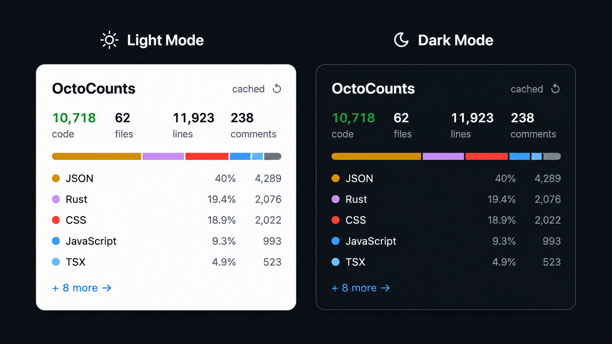
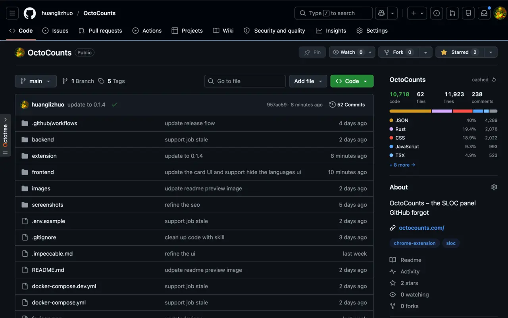

GitHub already shows language percentages. OctoCounts adds the actual file and line counts without cloning.

Branch, tag, or commit SHA resolves to an exact commit so every cached result means something.
The extension adds the OctoCounts card to repo pages with totals, language rows, cache status, and a full panel when you need detail.

GitHub URL, branch, tag, or SHA becomes a pinned commit.
GET /repos/:owner/:repoFetch the compressed archive tarball instead of full history.
archive.tar.gztokei walks source files and splits code, comments, and blanks.
tokei --output jsonReports are stored by owner, repo, commit, and tokei version.
commit + versionCopy plain text, export JSON, save a PNG card, or jump back to the source repository.
Actual SLOC for public GitHub repositories. Free, open source, and built for quick codebase checks.